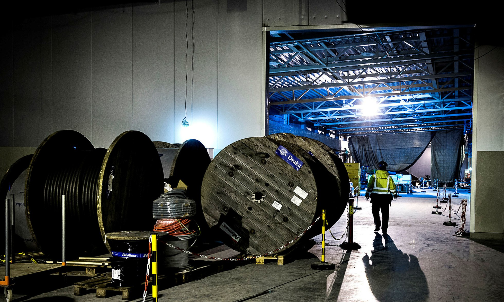

Det hemliga maktspelet om ESS: Skåne skänkte miljard – fick nytt universitet
I hemlighet lovade Skånes högsta politiker att skänka bort en miljard av skattebetalarnas pengar. Gåvan trissades upp av statens sluga förhandlare.
Vi har kartlagt det dolda maktspelet om ESS. Som enligt flera kritiska röster slutade med att Skånes toppolitiker köpte ett universitet.
Första spadtaget för ESS: forskningsminister Jan Björlund (gul slips) och hans danska kollega Sofie Carsten Nielsen sittter till vänster om Peter Honeth och Pia Kinhult
Dagen före midsommarafton i år, den 23 juni klockan 11.06, sätter Region Skåne via sin internetbank in 800 miljoner kronor på ett konto som tillhör European Spallation Source (ESS). Med 25 år av räntor och avskrivningar kommer det bidraget att kosta regionen drygt en miljard kronor.
Egentligen är det svenska staten som ska betala för forskningsanläggningen ESS, som just nu byggs utanför Lund. Men genom många års skickliga förhandlingar lyckades staten höja Skånes bidrag och till slut vältra över en miljardnota på skåningarna.
– Det är egentligen häpnadsväckande. För mig framstår regeringens agerande som mycket märkligt, säger tidigare regionstyrelseordföranden Jerker Swanstein (M).
Läs mer:Skåne betalar miljard för ESS - kan vara olagligt
Skånes ekonomiska stöd till ESS har inte varit föremål för politisk diskussion. Väljarna har aldrig fått säga sitt.
– Det har varit en hemlig process i slutna rum där bara några enstaka personer känt till att det här skulle finansieras med regionala medel, säger Harald Lindström, tidigare ekonomidirektör för Region Skåne.
Förhandlingarna sköttes helt informellt utan minnesanteckningar.
Trots att det handlar om en miljard kronor och tio års förhandlingar finns nästan inget nedskrivet på papper. Region Skåne har aldrig skrivit på något avtal om att skänka pengar till ESS.
– Förhandlingarna sköttes helt informellt utan minnesanteckningar. Det kan jag vara kritisk till, säger nuvarande regionrådet Henrik Fritzon (S).
Med stöd av ett 30-tal intervjuer och de offentliga dokument som finns har vi granskat det hemliga maktspelet kring ESS.
Det som från början var en fråga om hur Sverige skulle förmå andra länder att stötta ett svenskt värdskap för ESS blev med tiden också ett spel där svenska staten försökte komma billigare undan genom att maximera bidragen från Region Skåne. Det finns bedömare – även i de politiska leden – som anser att svenska staten lurade skjortan av Region Skåne.
Spelet om ESS börjar hösten 2000. Då enas svenska, danska och norska forskare om Lund som lämplig plats för en skandinavisk ESS-anläggning.
Möjligheterna är stora, chanserna att lyckas små. Enligt minnesanteckningar från ett möte i oktober 2000 är ESS Scandinavia "a golden opportunity with a slim chance".
När tidigare finansministern Allan Larsson blir ordförande för Lunds universitet får han i uppdrag av Göran Perssons socialdemokratiska regering att utreda om Sverige ska satsa på ESS. I juni 2005 rekommenderar han att Sverige ska tävla om att locka till sig den hyperavancerade forskningsanläggningen.
Allan Larsson föreslår att näringslivet hjälper svenska staten att klara Sveriges del av ESS-notan. Den svenska kostnaden beräknas vid den här tiden till runt 2,5 miljarder kronor.
I diskussionerna lovar Region Skånes dåvarande ordförande Uno Aldegren (S) mindre regionala bidrag till ESS-bygget. Det talas först om 12 miljoner kronor per år under tio år, alltså totalt 120 miljoner kronor. Sedan höjer Skåne budet: först till 135 miljoner och slutligen till 150 miljoner kronor.
Men det är småsummor jämfört med vad Skånes slutnota ska bli.
Under våren 2006 börjar de ansvariga i Region Skåne bli oroliga för att regeringen inte driver på tillräckligt hårt i ESS-frågan. I ett brev till utbildningsminister Leif Pagrotsky (S) efterlyser Uno Aldegren ett snabbt beslut. Han har ju siffror på att ESS ger mångmiljoninkomster. Sveriges bnp kan öka med fyra miljarder kronor per år under hela livslängden för ESS.
Hösten 2006 blir det maktskifte: Fredrik Reinfeldt (M) blir ny statsminister. Och kort därefter kommer regeringsbeslutet: Sverige vill stå värd för ESS. Allan Larsson blir alliansregeringens förhandlingsman för att få ESS till Lund.
Allan Larsson har strategin för förhandlingarna klar: De ska föras med "så små steg att ingen säger nej, så många steg att det bara återstår att säga ja".
Det ska visa sig vara en lyckad strategi – åtminstone ur svenska statens synvinkel. Först lyckas Sverige få ett tiotal andra europeiska länder att ställa sig bakom ESS. Sedan får Sverige länderna att betala.
Under många år för staten också hemliga samtal med Region Skåne.
Läs mer:ESS tar miljardlån för att klara bygget
De kostnader som Region Skånes makthavare tar på sig kommer i många steg och utlovas i slutna rum av några få personer. Därför blir det efter olika maktskiften omöjligt för den som inte tidigare deltagit i samtalen att säga nej till det som påstås ha förhandlats fram.
I samtalen får Peter Honeth, statssekreterare på Utbildningsdepartementet, en ledande roll. Han är före detta universitetsdirektör vid Lunds universitet och inser värdet av en ESS-etablering för Sverige, Skåne och Lund. Han ligger på för att Lunds universitet och Region Skåne ska gå in med mer pengar.
Bild: Niklas Gustavsson
I regionen blir Jerker Swanstein hans motpart, advokat från Helsingborg som under fyra år är Region Skånes högste politiker.
– Jag hade en serie telefonsamtal med Peter Honeth. Han ringde mig titt som tätt för att skruva upp beloppet, säger Jerker Swanstein.
Olika personer minns olika. Det finns inga minnesanteckningar från samtalen mellan ministrar och regionråd, mellan statssekreterare och regionala företrädare. Därför är det omöjligt att exakt dokumentera i vilken takt som staten lyckas förmå Region Skåne att utlova allt större bidrag till ESS.
Region Skånes dåvarande ekonomichef Harald Lindström säger att han 2005 eller 2006 får höra från dåvarande regionstyrelseordföranden Uno Aldegren (S) att ESS vill ha ett bidrag från Region Skåne på 300 miljoner kronor.
Jerker Swanstein säger att Region Skåne under 2007 och 2008 övertalas att öka sin andel av ESS-kostnaderna till någonstans mellan 30 och 40 miljoner kronor per år under tio år – det vill säga 300-400 miljoner kronor, exakt samma andel som Lunds universitet ska betala.
– Det här var uppgörelser som gjordes före min tid som rektor. Ingenting var satt i skrift.
Dåvarande universitetsrektorn Per Eriksson säger att Lunds universitet vid denna tid lovat att betala 400 miljoner och Region Skåne 500 miljoner kronor.
– Det här var uppgörelser som gjordes före min tid som rektor. Ingenting var satt i skrift. Därför bad jag på ett styrelsemöte att få mandat att utreda hur det låg till. Det här var de summor som jag kom fram till, säger Per Eriksson.
Under de här åren håller Harald Lindström i Region Skånes ekonomi. Han minns med förfäran hur staten och regionen diskuterar en regional finansiering av en statlig angelägenhet – en diskussion som inte noteras i några protokoll och som gäller en investering som i sin form strider mot svensk lag.
– Det fanns inga beslut. Och det kunde inte fattas några beslut. Kommunallagen var ju tydlig. Det här var inget som regionen hade laglig rätt att syssla med. Och det var något som staten noterade, säger han.
Skrivs de här utgifterna in i regionens bokföring och årsredovisningar?
– Nej, nej, nej! Ingen chans. Det här var muntliga överenskommelser mellan två personer. De stred i sina grundvalar mot god redovisningssed.
Som folkpartistisk forskningsminister spelar Lars Leijonborg en framträdande roll i ESS-spelet. Under våren 2009 närmar sig ESS-frågan ett avgörande. Det slutliga valet av säte för ESS ska äga rum på ett möte i Bryssel mellan EU:s forskningsministrar.
Ministrarna har tre värdländer att välja mellan: Sverige, Ungern och Spanien.
Lunds kandidatur försvagas av att de spanska och ungerska regeringarna höjt sina anbud. De vill betala mer ur egen kassa för att få ESS till Bilbao eller Debrecen. Därför tvingas också Lars Leijonborg skaka fram mer pengar för att göra Lund till ett attraktivt säte för ESS.
Lars Leijonborg vill bemöta de spanska och ungerska buden med ett samnordiskt bud: Sverige, Danmark och Norge ska gemensamt ta på sig att betala hela 50 procent av ESS-bygget. Men Norge och Danmark vill inte alls höja sina insatser så mycket som Sverige ber om.
Leijonborg håller dock fast vid budet. Därför ökar i ett slag Sveriges andel av ESS-notan från 25 till 35 procent. Det som ursprungligen varit en statsutgift på 2-3 miljarder kronor är nu uppe på 5-6 miljarder kronor. Lars Leijonborg vänder sig till finansdepartementet och Anders Borg för att utverka mer pengar. Han får ett blankt nej.
Nu är vi framme vid måndagen den 30 mars 2009. Dagen är lätt att komma i håg för Jerker Swanstein. Den dagen är han i Seattle på studiebesök med Sveriges Kommuner och Landsting (SKL). Delegationen har just besökt Microsofts huvudkontor och är på väg till Virginia Mason Medical Centre när Jerker Swansteins mobiltelefon ringer.
– Jag minns det väldigt väl. Det var forskningsminister Lars Leijonborg som ringde.
Jag råkade just då befinna mig på en gata i centrala Seattle. Lars Leijonborg ville att de belopp som Lunds universitet och vi i Region Skåne hade utlovat till ESS skulle höjas.
Lars Leijonborg berättar över telefon att han hamnat i tidsnöd. Han saknar ett visst antal miljoner för att Sverige ska ro ESS-anläggningen i hamn.
– Spanien och Ungern har övertrumfat vårt bud och varken Anders [Borg] eller Fredrik [Reinfeldt] vill skjuta till mer statliga pengar, förklarar Lars Leijonborg enligt Swanstein.
Bild: Hussein El-Alawi
Lars Leijonborg säger idag att telefonsamtalet inte innebar en formell uppgörelse.
– Jag uttryckte en önskan och Jerker sade att han skulle ta upp den här frågan när han kom hem till Sverige. Vi hade ju från början fått intryck från Allan Larsson att en del av finansieringen av ESS skulle komma från Skåne, från två kassor: Region Skåne och Lunds universitet. Det fanns löften tidigare. Nu utökades det något, säger Leijonborg.
– Det var ingen klassisk utpressning som vi ställdes inför. Men vi fick klart för oss att en viktig framtidssatsning i Skåne riskerade att gå förlorad om vi inte höjde vår kapitalinsats.
Enligt Jerker Swanstein går samtalet ut på att Region Skåne och Lunds universitet ska betala ytterligare 350 miljoner kronor.
– Det var ingen klassisk utpressning som vi ställdes inför. Men vi fick klart för oss att en viktig framtidssatsning i Skåne riskerade att gå förlorad om vi inte höjde vår kapitalinsats.
Enligt Swanstein lovar Lars Leijonborg under samtalet att skicka ett skriftligt avtal om att Region Skåne tar på sig ytterligare 175 miljoner kronor av ESS-notan och Lunds universitet lika mycket. Men något avtal dyker aldrig upp.
– Det var häpnadsväckande. Jag kunde ju gått och dött där i Seattle. I så fall hade det inte funnits något vittne på vad jag sagt och lovat. Det räcker ju inte med mitt ord. Det borde funnits dokumentation och avtal, säger Jerker Swanstein idag.
Dagen efter ringer Swanstein vidare till Per Eriksson, rektor på Lunds universitet. Swanstein vill vara säker på att de verkligen delar lika på merkostnaderna. Det visar sig dock att universitetets rektor fått ett helt annat besked när han ringts upp av Peter Honeth.
– Vi preciserade inte något exakt belopp. Utan sa att Lunds universitet och Region Skåne själva skulle komma överens om hur de skulle fördela den här sista höjningen mellan sig, säger Peter Honeth.
Bara några veckor senare, i maj 2009, samlas EU:s forskningsministrar i Bryssel för slutmötet om ESS. De konstaterar att Sverige lagt bästa budet och förordar att ESS hamnar i Lund.
I glädjeyran över beskedet är det få som ifrågasätter den massiva svenska finansieringen – och den ökade skånska insatsen.
Om det behövs så tycker jag att Anders Borg måste öppna börsen lite till.
Dagen efter beslutet berättar Jerker Swanstein i en intervju med Sydsvenskan att Region Skåne efter starka påtryckningar från regeringen förbundit sig att betala 500 miljoner kronor.
"Om det behövs så tycker jag att Anders Borg måste öppna börsen lite till", säger Jerker Swanstein i tidningsintervjun.
Nu tar kostnadsökningen ny fart. Men det är högst oklart hur det går till. Det finns inga skriftliga dokument att luta sig mot.
Enligt Per Eriksson leder regeringens kohandel under 2009 till att ESS-notan för Region Skåne ökar med 200 miljoner till totalt 700 miljoner kronor. För Lunds universitet stiger kostnaden med 150 miljoner till 550 miljoner kronor.
Det är inga siffror som Jerker Swanstein säger sig känna igen.
– Efter det att jag lämnade har jag sett att Region Skåne plötsligt skulle betala 800 miljoner kronor till ESS. Varför begriper jag inte. Det övergår mitt förstånd.
– När jag så småningom avslutade min karriär som regionråd så var summan för oss båda, för Region Skåne och Lunds universitet, uppe i 50 miljoner kronor under tio år, det vill säga 500 miljoner kronor var, säger Jerker Swanstein.
– Efter det att jag lämnade har jag sett att Region Skåne plötsligt skulle betala 800 miljoner kronor till ESS. Varför begriper jag inte. Det övergår mitt förstånd. Jag vill inte spekulera i varför, det överlåter jag till dig.
När Jerker Swanstein avgår som regionråd under hösten 2010 efterträds han av partikollegan Pia Kinhult (M).
När hon som ny regionstyrelseordförande sätter sig in i ESS-ärendet får hon veta att Jerker Swanstein har fel när han påstår att Region Skåne ska bidra med 500 miljoner kronor. Även Per Eriksson har fel om han påstår att beloppet är 700 miljoner kronor. Nej, nu förväntar sig staten att Region Skåne betalar 800 miljoner kronor.
Den nya summan kommer som en fullständig överraskning för Kinhult, när hon tillsammans med regiondirektör Jonas Rastad träffar Peter Honeth på ett möte våren 2014. Regionföreträdarna begär ett skriftligt avtal om hur Region Skåne ska få insyn och inflytande över ESS. Men utan resultat.
Pia Kinhult går med på att Skåne ska skänka 800 miljoner kronor. Fortfarande finns inga skrivna papper. Och ingen förklaring till varför beloppet skruvats upp hela vägen till 800 miljoner kronor.
Pia ställdes inför fullbordat faktum. Hon satt med ett muntligt löfte som hon inte hade möjlighet att dra sig ur. Hon var upprörd över att ställas inför en summa som var betydligt högre än vad hon trodde att den var. Det kommer jag väl ihåg.
Pia Kinhult är fåordig om sin roll i spelet om ESS. Men andra berättar att den oväntat höga notan gör henne bekymrad, något som vidimeras av riksdagsledamoten Rikard Larsson, som vid den här tiden är socialdemokratisk oppositionsledare i Region Skåne:
– Pia ställdes inför fullbordat faktum. Hon satt med ett muntligt löfte som hon inte hade möjlighet att dra sig ur. Hon var upprörd över att ställas inför en summa som var betydligt högre än vad hon trodde att den var. Det kommer jag väl ihåg.
Det finns ytterligare ett problem för Pia Kinhult, Peter Honeth och den borgerliga alliansregeringen. Det tänkta bidrag som Skåne ska betala är olagligt.
Det är omöjligt för Region Skåne att betala en klumpsumma till ESS. Det skulle ställa regionen inför en akut ekonomisk kris och en omedelbar skattehöjning.
Samtidigt förbjuder kommunallagen att utbetalningen skrivs av över 25 år. Därför ställer Region Skåne ett villkor: lagen måste ändras.
Den 1 september 2014 träder en ny skräddarsydd ESS-lag i kraft. Lagen gör det möjligt för Region Skåne att låna pengar till ESS-gåvan och betala skulden på 25 år. Dagen efter är regionrådet Pia Kinhult med och tar första spadtaget för ESS-bygget. Då framhäver hon hur mycket Skåne betalar.
– Vi deltar med lika mycket som Spanien, säger hon vid ceremonin.
Enligt kritiska betraktare visar den jämförelsen på det orimliga i Skånes miljardbidrag.
Förre ekonomidirektören Harald Lindström är dock tämligen ensam om att klä sin kritik i ord:
– Skånes bidrag till ESS är 800 miljoner kronor, samma som Spaniens bidrag. Men det spanska bidraget kommer ju i form av att de tillverkar utrustning, skapar forskning och bidrar till sysselsättning och skatteintäkter i Spanien. Regionen bidrar med kontanta skattemedel. Som av en händelse motsvarar bidraget på öret den skatteökning som regionledningen föreslog för 2017.
Harald Lindström säger att han som professionell kommunekonom har svårt att se att ESS skapar någon nytta för Region Skåne.
– ESS skapar nytta för staten. Det finns ingen substans för den här kostnaden för Region Skåne. Det var ett sätt för finansdepartementet och Anders Borg att få någon annan än staten att betala statens kostnader. Det är i slutänden skattebetalarna i Skåne som betalar för ESS med en engångsskatt på 0,3 procent, det vill säga 30 öre på regionskatten.
Enligt Harald Lindström försöker staten även i andra sammanhang, exempelvis i Sverigeförhandlingen om järnvägs- och bostadsbyggen, få kommuner och regioner att betala för en statlig angelägenhet.
– Men där hänvisar man till markvärdesökningar i en öppen dialog. I fallet med ESS har allmänheten hållits totalt ovetande, säger han.
Kort efter det där första spadtaget lämnar Pia Kinhult politiken. De borgerliga förlorar makten i både Stockholm och Skåne. Ny regionordförande blir socialdemokraten Henrik Fritzon.
Hösten 2015 är det hög tid för Region Skåne att lägga upp pengarna på bordet. Den 15 september dimper det ner en faktura. Den kommer från ESS i Lund och lyder på 843 miljoner kronor – eller mer exakt 843 804 350 kronor.
Den summa som Region Skåne ska betala har ännu en gång justerats upp. Nu med ytterligare 43,8 miljoner kronor för att kompensera ESS för höjda priser och löner.
"We look forward to our continued collaboration", heter det i ett artigt formulerat följebrev.
För allra första gången säger Region Skåne stopp och belägg. De vägrar betala fakturan och en tjänsteman skickar istället iväg ett svarsbrev:
"För god ordnings skull vill jag i Region Skånes namn bestrida den faktura som ingår i ert brev..."
Region Skåne reagerar inte bara på det höga påslaget. I svarsbrevet hävdar regionen dessutom att det ännu inte finns något avtal om att regionen ska bidra till ESS-bygget.
Nu kopplas den nya regeringen in. Forskningsminister Helene Hellmark Knutsson (S) skickar ett brev direkt till Henrik Fritzon.
Nu har kravet på Region Skåne åter förts ner till 800 miljoner kronor. Och ministern är noga med att att påminna om de fördelar som investeringen innebär:
“ESS förväntas medföra stor nytta för det lokala näringslivet och för dem som bor i Skåne."
Henrik Fritzon talar med forskningsministern strax före jul 2015. När de diskuterar Skånes obetalda ESS-faktura kan de snabbt skifta samtalsämne. Fritzon har en lång önskelista om viktiga statliga satsningar i Skåne. Men det är bara en fråga som Helene Hellmark Knutsson har makt över: Malmö högskolas ansökan om att bli universitet.
Regeringen har i många år sagt tvärnej. Senast när statsminster Stefan Löfven besökte Malmö ett halvår tidigare. Då fällde han en dräpande kommentar:
– Vi har idag inga planer på att förändra status på någon högskola.
Månaderna går. Region Skåne fortsätter att strunta i fakturan för ESS. Men under april och maj 2016 hamnar Henrik Fritzon i hemliga och allt intensivare överläggningar med Helene Hellmark Knutsson.
Torsdagen den 16 juni tillkännager de resultatet av sina samtal på en presskonferens i Malmö: Malmö högskola ska bli universitet! Nyheten kommer som en fullständig överraskning. Inte ens högskoleledningen tror sina öron: Efter att i fjorton år ha fått nej, nej och åter nej säger regeringen plötsligt ja till högskolans ansökan om universitetsrättigheter.
Henrik Fritzon förklarar helomvändningen:
– Jag har under våren fört utförliga samtal med regeringen om Skånes utveckling och vad som är de allra viktigaste statliga satsningarna för att Skåne ska utvecklas vidare mot högre tillväxt och fler jobb. Då har frågan om att Malmö högskola ska bli universitet varit en av de allra mest prioriterade frågorna från min sida.
Malmö universitet var en efterlängtad gåva från staten till Skåne. Bara några dagar senare skickar Skåne en dyrbar present tillbaka.
Endast fyra dagar senare, måndagen den 20 juni, beslutar regionstyrelsen att betala 800 miljoner kronor till ESS. Redan på eftermiddagen klubbas samma beslut av regionfullmäktige. Besluten justeras omedelbart.
Tre dagar senare rasslar det till på det bankkonto på Handelsbanken som tillhör ESS. Region Skånes mångmiljonbidrag har nått fram.
Det har dröjt. Men till slut har pengarna betalats.
Det finns elaka tungor. Malmö högskola blev universitet. Det kostade några hundra miljoner kronor.
Det finns inga skrivna papper på att Skåne ska få ett nytt universitet i utbyte mot regionens ESS-betalning.
Likväl finns det flera initierade personer som påpekar det starka tidssambandet mellan helomvändningen om Malmö universitet och betalningen till ESS.
Förre regionstyrelseordföranden Jerker Swanstein är en av dem:
Det finns elaka tungor. Malmö högskola blev universitet. Det kostade några hundra miljoner kronor.
Regionens oppositionsledare Carl Johan Sonesson (M) är inne på samma spår:
Tanken har slagit mig, men ingen har sagt att det finns en koppling. Beslutet om Malmö universitet kom ju bara dagarna innan regionfullmäktige fattade beslut om ESS.
Lunds universitets tidigare rektor Per Eriksson är övertygad om att besluten hänger ihop:
Region Skåne tog lite mer tid på sig än Lunds universitet med att betala för ESS. De fick nog någon motprestation på köpet. Du kan ju själv gissa vad regeringen i sin tur gjorde för Skåne. Malmö högskola är en sådan sak. Jag skulle misstänka att högskolan fick universitetstatus som en del i en uppgörelse.
De personer som säkert vet, forskningsminister Helene Hellmark Knutsson och regionrådet Henrik Fritzon, förnekar dock att Skånes ESS-bidrag har påverkat deras samtal om att göra Malmö högskola till universitet.
Helene Hellmark Knutsson besöker ESS i september 2015. Några månader senare ska hon sitta i hemliga överläggningar med Henrik Fritzon.
Bild: Lars Brundin
– Jag såg inget samband mellan ESS och Malmö universitet. Det var två separata processer som Henrik och jag talade om vid skilda tillfällen. Att besluten hamnade så nära varandra i tiden berodde på att vi ville undvika Almedalsveckan. Då var ju många andra nyheter i luften, säger Helene Hellmark Knutsson.
– Jag kan inte tänka mig att det påverkat. Det är helt olika frågor. Jag sitter ofta i samtal med regeringen om statsbidrag, ersättningar för id-kontroller och olika sjukvårdssatsningar. Jag för många samtal där ESS inte alls nämnts, säger Henrik Fritzon.
Men i 25 år framåt ska de skånska skattebetalarna betala för ett beslut de aldrig har fått möjlighet att påverka. Är inte det ett demokratiskt problem?
Henrik Fritzons svar är att han visserligen är kritisk till att det förra, moderatledda styret i Skåne skötte ESS-förhandlingarna helt utan att dokumentera vad de höll på med. Men beslutet om Skånes medfinansiering har nu tagits i full enighet av Skånes högsta politiska församling.
– Regionfullmäktige har bedömt att investeringen är ett bra beslut som gynnar Skånes utveckling. Och det är regionfullmäktiges uppgift att fatta den här sortens långsiktiga investeringsbeslut.
Så steg Skånes nota för ESS (miljoner)
Först skulle ESS inte kosta skattebetalarna ett rött öre, men til slut blev notan till Region Skåne 800 miljoner kronor.
2000 Idén om ESS-Lund föds.
2002 Flera EU-länder vill stå värdar för ESS.
2004 ESS-Lund utreds. (150-200)
2005 Sverige rekommenderas söka ESS. (150-200)
2006 Maktskifte i Region Skåne. (300)
2007 Sverige erbjuder värdskap. (400)
2009 Sverige tilldelas ESS. (500-800)
2011 17 EU-länder enas om att bygga ESS i Lund. (500-800)
2014 ESS börjar byggas. Maktskifte i Region Skåne. (500-800)
2015 ESS skickar faktura som Region Skåne vägrar betala. (843)
2016 Region Skåne betalar. (800)
Tung smäll för ESS: Sverige skrotar skattelöftet
Regeringen har skrotat löftet om att befria alla ESS-anställda från skatt. Det gör att forskningsanläggningen kan kosta en kvarts miljard kronor mer – om året. Nu fortsätter ESS att jaga andra skattelättnader.
Sverige lämnade 2009 mängder av löften för att få bli värdland för forskningsanläggningen ESS. Svenska staten betalar ihop med Region Skåne 6,8 miljarder kronor för bygget. Och dessutom lovade Sverige att betala hundratals miljoner kronor till utländska forskningsprojekt, bland annat röntgenlaseranläggningen XFEL i Hamburg.

Bygget av forskningsanläggningen ESS i Lund pågår för fullt. Här är galleribyggnaden, som löper längs med den 537 meter långa acceleratortunneln. I galleribyggnaden finns el, kyla och andra installationer som behövs för acceleratorn.Bild: Lars Brundin
Men Sverige lovade också att ge ESS omfattande skattelättnader. Några har redan fallit på plats. Till exempel har riksdagen röstat igenom en speciallag som gör att ESS helt slipper att betala moms, energiskatt och andra punktskatter.
– Tyskland är inte intresserat av att betala skatt på energi till Sverige, sa utbildningsdepartementets statssekreterare Peter Honeth till Sydsvenskan i samband med att ESS började byggas i september 2014.
ESS kommer att förbruka lika mycket elektricitet som hela Laholms kommun: 270 gigawattimmar per år. Det innebär att ESS sparar drygt 60 miljoner kronor per år på att slippa betala energiskatt och moms på elen.
Men det allra viktigaste skattelöftet från Sverige var ett annat: de hundratals människor som ska jobba på ESS slipper att betala inomstskatt i Sverige.
Skattebefrielsen skulle ursprungligen gälla för alla ESS-anställda. Så var den svenska regeringens officiella löfte i 2009 års förhandlingar. Därefter har diskussionen successivt kommit att gälla enbart utländsk personal.
– Det här med befrielse från inkomstskatt har inte landat än. Men det är något som vi pratar om med våra kontakter på utbildningsdepartementet. Det här är en fråga som lever, men som inte är avslutad, säger Agneta Nestenborg, som är administrativ direktör på ESS, när vi träffar henne i Lund i början av november.
Agneta Nestenborg, administrativ direktör för ESS.Bild: Lars Brundin
För ESS är det avgörande att forskningsanläggningen kan locka till sig rätt personal, från hela världen. Och då är det en viktig morot att personalen slipper betala skatt.
– Det blir väldigt väldigt viktigt med skattebefrielse. I det långsiktiga perspektivet så överrider den frågan alla andra administrativa frågor som vi lever med just nu, säger Agneta Nestenborg.
Många utländska forskare på ESS kommer att ha kontrakt som löper på några år. Det är inte säkert att deras partner får jobb i Sverige, vilket gör att de måste försörja hela familjen på lönen från ESS. Då är skattebefrielse en viktig pusselbit för att forskarna ska välja just Sverige, lyder argumentet.
Löftet om att plocka bort inkomstskatten för de ESS-anställda kom från Fredrik Reinfeldts borgerliga regering under förhandlingsspelet om att få ESS till Sverige.
Men hur blir det nu med skattebefrielsen? Vi ringer till den ansvariga ministern Helene Hellmark Knutsson (S) och frågar. Då kommer hon med ett överraskande besked. Det visar sig att den nya, rödgröna regeringen har skrotat planerna på att ESS helt ska slippa betala inkomstskatt för de anställda:
– ESS har inte kommit med någon formell framställan till regeringen i den här frågan. Det beror på att ESS inte har lyckats skapa enighet i hela styrelsen och bland alla medlemsländer. Det finns ett motstånd mot den här skattebefrielsen från vissa länder, säger forskningsminister Helene Hellmark Knutsson (S).
– Däremot ska vi se till att ESS har goda villkor för rekrytering och inflyttning av kvalificerad arbetskraft. ESS har ju möjlighet att erbjuda sin personal svensk expertskatt, säger ministern.
Forskningsminister Helene Hellmark Knutsson (S) besöker ESS i september 2015.Bild: Lars Brundin
Lars Börjesson, som är ordförande i det internationella råd som styr ESS, bekräftar att flera länder satt sig på tvären och stoppat planerna på att ESS-personalen ska befrias från inkomstskatt.
Han säger att skattediskussionen fördes för flera år sedan och varit en död fråga sedan dess.
– Den fördes i den då rådgivande internationella kommittén inför bildandet av ESS ERIC. Det har inte varit en fråga för det internationella rådet sedan dess, säger han.
Professor Lars Börjesson, som också är ordförande i det internationella rådet som styr ESS, gör segergesten när grundstenen till forskningsanläggningen kommer på plats i oktober 2014.Bild: Peter Frennesson
Men den informationen har uppenbarligen inte nått fram till de högsta tjänstemännen på ESS.
– Det här har inte jag hört, säger Agneta Nestenborg, administrativ direktör på ESS, när vi ringer tillbaka till henne.
Det här gör ju att driftskostnaden för ESS ökar kraftigt. Hur ska ni klara det?
– Jag får fundera på det. Det är politikerna som tar besluten. Det är något vi får anpassa oss efter. Men just i detalj hur vi ska hantera det här vet jag inte, säger Agneta Nestenborg.
Det skrotade löftet om skattebefrielse kan bli dyrt för ESS - och i förlängningen för skattebetalarna i Sverige och Danmark.
I maj 2015 skickade spanska näringsdepartementet ett varnande brev till svenska och danska regeringen om vad som händer om skattebefrielsen inte blir av. Spanien påpekar att då blir ESS 200 - 300 miljoner kronor dyrare per år. Det är ungefär en femtedel av driften för ESS.
Den spanska statssekreterare Carmen Vela Olmo skriver i brevet att det är "väldigt viktigt" att Sverige och Danmark driver igenom skattelöftet. Om ESS inte kan få nya skattelagar anser Spanien att det är "nödvändigt att hitta alternativ för en kostnadsminskning på liknande belopp, kanske en ökning av värdländernas bidrag till ESS under driftperioden".
Det kan alltså innebära att Sverige och Danmark får betala ytterligare en kvarts miljard kronor per år.
Nu fortsätter ESS att pressa på för att få bättre skattevillkor. Till exempel vill ledningen för ESS att den svenska expertskatten efter dansk förebild ska förlängas från tre till fem år.
Den nuvarande svenska expertskatten innebär att utländsk personal slipper skatta för 25 procent av sin inkomst i Sverige under sina tre första år i landet. Vissa förmåner är också helt skattebefriade, som kostnaden för barnens skolgång i Sverige och två hemresor per år.
När det internationella rådet som styr ESS hade sitt senaste möte beslutade de också att driva frågan om skattebefriesle för utländsk personal som är i Sverige en kortare tid för att installera forskningsutrustning på ESS.
ESS tar miljardlån för att klara bygget
Forskningsanläggningen ESS har hamnat i svår ekonomisk kris. Miljardstödet från femton europeiska länder dröjer. Nu kommer räddningen: ett lån på tre miljarder kronor.
Erik Magnusson
Dan Ivarsson
På tisdagen blev det äntligen klart: forskningsanläggningen European Spallation Source (ESS), som just nu byggs utanför Lund, får låna 300 miljoner euro, nästan 3 miljarder kronor. Pengarna kommer från Europeiska investeringsbanken (EIB), Nordiska investeringsbanken (NIB) och Svensk exportkredit (SEK).
– Det är viktigt för ESS att säkerställa likviditeten för att möta projektets kostnader och undvika kostsamma förseningar, säger Agneta Nestenborg, som är administrativ direktör för ESS.
Lånet från de tre finansinstituten ska säkra att bygget går vidare, trots att flera av länderna som ska finansiera ESS inte ens har börjat skicka pengar. Brygglånet på tre miljarder kronor motsvarar en sjättedel av hela byggkostanden för ESS. Det är mer än vad den jättelika byggarbetsplatsen kostar under hela det här året.
De mörka molnen hopar sig över Brunnshögområdet i norra Lund samtidigt som en grupp arbetare är djupt engagerade i gjutningen av en massiv betongplatta.
Alla de armeringsjärn som byggjobbarna pusslar samman till stora komplicerade rörskelett ska bilda grunden för "Monoliten" – den del av ESS-anläggningen där neutroner ska flöda fram för att se in i materiens innersta kärnor.
– Vi bygger massivt. Armeringsjärnen är dubbelt så många och dubbelt så tjocka som vid normala gjutningar, säger Helena Parker, som är ansvarig för projektsupport på Skanska.
Den europeiska spallationsanläggning som håller på att byggas vid Brunnshög i de nordöstra delarna av Lund är kostnadsberäknad till 1 843 miljoner euro – nästan 18 miljarder kronor.
Det är en svindlande summa som motsvarar vad det för tjugo år sedan kostade att bygga Öresundsbron.
Sverige, Danmark och tretton andra europeiska länder delar på byggkostnaderna. Men eftersom byggarbetena är i full gång och flera länder har dröjt med att betala sin andel av kostnaderna har ESS-konsortiet bett om tillfälliga brygglån för att klara de närmaste årens finansiering.
Agneta Nestenborg är administrativ direktör på ESS i Lund.
Bild: Lars Brundin
Enligt Agneta Nestenborg har ESS-projektet dock inte hamnat i akut finansiell kris. Hon vill snarare beteckna den bristande likviditeten som "en planerad kris".
– Alla länder har tagit beslut om att skicka in pengar till ESS. Men det är inte alltid som våra utgifter sammanfaller i tiden med när vi får in pengar från våra medlemsländer. Vi gör hela tiden prognoser för vårt kassaflöde, säger hon.
Sverige och Tjeckien har redan betalat större delen av sina pengar projektet. Danmark har betalat hälften. Tyskland har tidigarelagt sin inbetalning. Norge har påbörjat sina inbetalningar.
"Förhoppningsvis kan bidraget lindra en del av de kritiska likviditetsproblem som ESS möter", heter det i ett brev från det norska utbildningsdepartementet.
Men därutöver finns svarta hål i finansieringen av ESS. Belgien, Nederländerna och Spanien har ännu inte börjat betala sina andelar i byggprojektet.
Innan ESS-konsortiet kan få in hela bygg- och investeringssumman på 18 miljarder kronor måste dessa tre länder gå från observatörs- till medlemsstatus i ESS – en process som kan ta ytterligare några månader.
Dessutom måste ESS-konsortiet värva helt nya medlemmar. Det saknas nämligen ungeför en halv miljard kronor i investeringsbudgeten – pengar som ska komma från en handfull nya ESS-länder. När de ska lockas in som bidragsgivare har de fått höra att de kan få delta i ett projekt som inom bara några få decennier väntas skapa flera nobelpristagare.
Byggnadsarbetena pågår som bäst på ESS-anläggningen i Lund där "Monoliten" just nu gjuts – den del av anläggningen där protoner med extremt hög hastighet ska träffa en måltavla av volfram för att slå loss de neutroner som ska användas för i forskningsanläggningen.
Bild: Lars Brundin
Bland de nya länder som hittills visat intresse för ESS märks föga kapitalstarka länder som Litauen, Lettland, Island och Grekland.
– Grekland har varit här som observatörer på möten med vår styrande council. Då har de fått tillfälle att vara med och lyssna, säger Agneta Nestenborg.
Men Grekland känns inte som ett rikt land som kan bidra med miljarder till ESS?
– Grekerna kan ha tillgång till lokala eller nationella strukturfonder som de måste investera i bra projekt. Det finns kanske inte sådana projekt i Grekland.
ESS-bygget följer en snäv tidsplan. Därför är bygget känsligt för strejker, oväder och andra störningar. Om bygget skulle bli dyrare än beräknat så är en lång och tidsödande process att vänta bland de deltagande medlemsländerna för att godkänna alla kostnadsökningar.
– Det krävs ett enhälligt beslut av medlemsländerna och det är ett delat ansvar för alla medlemsländerna att täcka dessa kostnader och bidra till en balanserad budget, säger Karin Röding, statssekreterare på Utbildningsdepartementet.
Samma enhällighet krävs för att täcka eventuellt kvarvarande svarta hål:
– Om konsortiet mot förmodan inte skulle hitta finansiering för de ca 2,5 procent som i dagsläget saknas, så blir det en fråga som måste diskuteras och avgöras i styrelsen för konsortiet. Om finansiering saknas måste ESS hitta besparingar och anpassa projektet efter den tillgängliga budgeten, säger Karin Röding.
Just nu arbetar 380 personer i ESS-konsortiet. När installationerna av en rad tekniska anläggningar inleds nästa år beräknas mer än 1000 personer arbeta på Brunnshög.
Årets budget för ESS-bygget ligger på 240 miljoner euro (2,4 miljarder kronor). Under 2017-2018 beräknas bygget kosta totalt sex miljarder kronor.
Bygget ska vara klart 2019. Då ska ESS växla om – från att styras av en investeringsbudget för byggprojektet till att arbeta med en fortlöpande driftbudget. Det finns ännu ingen uppgörelse om hur Sverige och övriga fjorton medlemsländer ska dela på driftskostnaderna på 1,4 miljarder kronor per år.
Enligt statuterna ska Sverige och Danmark gemensamt svara för ungefär 15 procent – 210 miljoner kronor per år – av driftbudgeten. Under nästa år inleds förhandlingar om de exakta mångmiljonbidragen.
– Vi måste hitta en mekanism för att finansiera driftsfasen. Alla är införstådda med att det ska göras. Vi får hitta ett system för vem som ska betala vad, säger Agneta Nestenborg.
– ESS blir en dålig investering för alla om vi inte fixar driften.
FAKTA/De länderna bekostar ESS-bygget
Belgien*, Danmark, Estland, Frankrike, Italien, Nederländerna*, Norge, Polen, Schweiz, Spanien*, Storbritannien, Sverige, Tjeckien, Tyskland, Ungern.
Återstår: 46,1 miljoner euro.
Totalt: 1 843 miljoner euro i 2013 års priser.
*Ännu inte medlemsland, tills vidare endast observatörsland.
ESS: ett jättemikroskop för 18 miljarder
Forskningsanläggningen ESS fungerar som ett jättemikroskop, där neutroner används för för att undersöka olika material.
Sverige betalar mest, men minst 14 andra länder delar på byggnotan.
European Spallation Source (ESS) är en europeisk forskningsanläggning som håller på att byggas vid Brunnshög, nordost om Lund. Anläggningen består av en kraftfull partikelaccelarator, där protoner slungas iväg för att träffa en måltavla gjord av volfram. Då inträffar själva spallationen: vid krocken frigörs neutroner, som flyger iväg med hög hastighet.
Dessa neutroner används i vetenskapliga instrument, där det exempelvis går att undersöka egenskaperna hos olika material. ESS kommer att bli världens mest kraftfulla neutronkälla, och användas för forskning inom bland annat läkemedel, nanoteknologi, materialvetenskap och experimentell fysik.
ESS ska börja testköras 2019 och vara i full drift om tio år. Då kommer 2 000 - 3 000 gästforskare att använda ESS varje år. Värdländer för ESS är Sverige och Danmark. Forskningsanläggningen ligger i Lund, men datacentret, där resultaten analyseras, ligger i Köpenhamn.
Kostnaden för att bygga ESS är 1,84 miljarder euro - alltså cirka 18 miljarder kronor. Kostnaden är satt i 2013 års priser, och räknas upp med några procent per år.
Sverige betalar drygt en tredjedel av ESS-bygget, cirka 6 miljarder kronor. Av de pengarna har Region Skåne betalat 800 miljoner kronor och Lunds universitet 594 miljoner kronor.
Bild de betalar
Sverige och Danmark står för nästan halva notan, men minst 15 länder kommer att vara med och finansiera bygget, enligt följande fördelning:
Sverige: 35%
Danmark: 12,5%
Tyskland: 11%
Storbritannien: 10%
Frankrike: 8%
Italien: 6%
Spanien: 5%
Övriga länder*: 10%
Hittills ofinansierat: 2,5%
* Övriga länder: Schweiz, Norge, Polen, Ungern, Belgien, Nederländerna, Tjeckien och Estland.
När det gäller den den sista delen av ESS, som fortfarande är ofinansierad, har ESS diskussioner med bland andra Grekland, Lettland och Litauen.